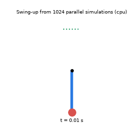

Early stage: tuned kernels reach about 11 to 17% of PyTorch (3.4x the first version)
GPU Robot Lab
GPU kernels written from scratch and benchmarked against PyTorch, then used to speed up a simulated robot. This page explains the first kernel, a tiled matrix multiply, and shows what has been measured so far. Code on GitHub.
1. Why a GPU kernel works on tiles
Multiplying two matrices means every output number needs a whole row of A and a whole column of B. Read naively, the same numbers get fetched from slow memory over and over. A tiled kernel gives each GPU program one small block of the output, then walks along K loading one tile of A and one tile of B at a time, so each loaded number is reused for a whole block of results.
Reduction = 2 x BM x BN / (BM + BN). The real kernel uses 64 x 64 tiles, which gives 64x fewer reads. The same formula is checked by a test in the repo (tests/test_tiling.py).
2. In what order should tiles run?
The GPU runs many programs at once, and they share a cache. If the programs running together work on a compact block of output tiles, they need fewer different pieces of A and B, so more reads hit the cache. Version 2 of the kernel launches tiles in groups to do this. The grid below numbers the tiles in launch order, and the shaded ones are the first 16 programs, imagined to run at the same time.
Fewer is better. This illustrates the idea and the arithmetic (checked by tests in tests/test_tiling.py). Whether it speeds up the real kernel is measured on a GPU, not claimed here.
3. What has been measured
Tesla T4 on free Google Colab, 2026-10-20, 16-bit numbers. Every version gives answers that match PyTorch. Four versions are compared: PyTorch, the first kernel, the first kernel with the best settings from a 135-setting sweep, and v2 (automatic tuning plus the grouped launch order).
At 2048 and 4096, v2 is about 3.4 times faster than the first kernel and 15 to 18 percent faster than the first kernel with the best sweep settings. It reaches 11 to 17 percent of PyTorch at those sizes. v2 changes several things at once, so this does not show which one helped. PyTorch's own speed changed between runs (17,606 and 32,751 GFLOPS at 2048), so percentages move; compare versions within one run.
Why the first kernel was slow
The first kernel used 255 registers per thread, the maximum, and spilled 84 of them to slow memory. Smaller K-tiles needed fewer registers and spilled none.
| Setting (tile, warps) | Registers | Spills | GFLOPS at 2048 |
|---|---|---|---|
| 64x64x32, 4 warps (first kernel) | 255 | 84 | 979 |
| 64x64x32, 2 warps | 64 | 972 | 90 |
| 64x64x32, 8 warps | 188 | 0 | 2,528 |
| 64x64x16, 8 warps | 118 | 0 | 2,807 |
| 64x64x16, 4 warps (best) | 200 | 0 | 3,035 |
Registers and spills come from the compiler for each setting. Speeds come from the 135-setting sweep (torch.matmul ran at 18,505 GFLOPS in that run). The link between spills and speed is a strong pattern, not a controlled proof. Pipeline stages hardly mattered (3,045, 3,036 and 3,035 GFLOPS).
4. A robot, simulated in parallel
The same idea of doing many things at once applies to robots. The pendulum below has a motor too weak to lift it, so it must swing back and forth to reach the top. A planner tries thousands of motor plans at the same time in a simulator, keeps the best, and repeats. The final plan is then replayed in a separate simulator as a check.

This preview was planned from 1,024 parallel simulations on a laptop CPU in 2.8 seconds. The replay in plain MuJoCo ended 0.498 m above the hinge, where the top is 0.5 m. It has not been run on a GPU yet, so there is no GPU speed-up to claim.
5. What is next
Find out which part of v2 helps (the tile settings or the grouped launch order) by changing one at a time, repeat the measurements to see how much they vary, and close more of the gap to PyTorch. Then run the robot simulation on a GPU and measure how much faster many simulated robots run than one CPU thread. Everything here runs on a free shared GPU. Run it yourself in Colab.